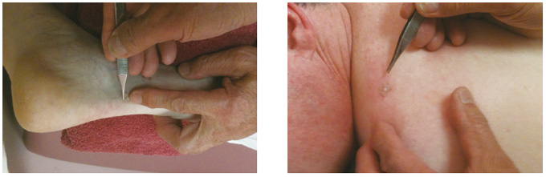

相关证明

Nakazawa, Hiroshi
M.D.
Past President, American Academy of Medical Acupuncture (AAMA)
Former Chair, American Board of Medical
Acupuncture (ABMA)
I am a General Medical Acupuncturist for:
- Pain in general
- Internal Medicine
- Female Disorders
- Pediatrics
- Preventative Medicine
My favorite 20 Pyonex points
Head, Neck and Shoulder
- GB20
- GB21
- TH15
- CV22
- LI15
Back
- GV4
- GV14
- BL23
- BL27, 28
- GB30
Front
- CV12
- CV6
- CV4
Upper Extremities
- LI4
- LI11
- PC6
Lower Extremities
- ST36
- SP6
- LV3
- GB34
My Clinical Practice with Pyonex
For the past 3-4 years, I have applied Pyonex in many clinical opportunities. I like Pyonex 1.5 x 0.2 for adult patients and 0.6 x 0.2 for children or infants.
1. For Pain:
In general, I apply Pyonex (2-4) following acupuncture treatments. I ask the patients to keep them in as long as a week, until their follow up appointment. In case Pyonex comes (peels) off, I ask my patients to call me and return to the office to replace with new Pyonex. I found this process works well in terms of good relationship with patients and they appreciate my concern. Also, its creates an additional communication opportunity.
2. Medical Conditions:
Following treatments at my office, I use Pyonex in vital areas to maintain the effectiveness of acupuncture. For instance, with COPD, I treat patients at the office with LU-LI Distinct Meridian with 4 Hz electricity. Following this, I apply Pyonex to BL13, LU1. In GI problems I use Chong-Mai at office. I send patient home with Pyonex SP4, PC6 and CV12.
3. Pediatrics
In the common respiratory illness, Pyonex can be applied CV22, LU5 and patients respond well. The youngest so far is 6 months old. Premature twins with reflux, vomiting and loss of weight. With consultation, Pyonex were used in Chong-Mai and CV13, they began to gain weight with less vomiting.
4. Cancer Patients
Following office treatment, Pyonex is very useful as they are mild, shallow and not irritating. I apply Pyonex on LI4, ST36 and ST43 (for pain)
5. Prevention of Illness
I believe Pyonex is the most useful and powerful tool to maintain good health and balance. I have 12 patients (ages 60-80) in this protocol. Once a month visit for the past 24 months just acupuncture for this purpose and so far all stay in good health without main illness and no Cancer thus far. Points are ST36, LI4, LV3, sometime SP6, GV4 alternate. I would like to expand the number of patients to ascertain the efficiency of Pyonex in this subject. I have no complaints of bleeding, infection, etc. and patients are very satisfied.
